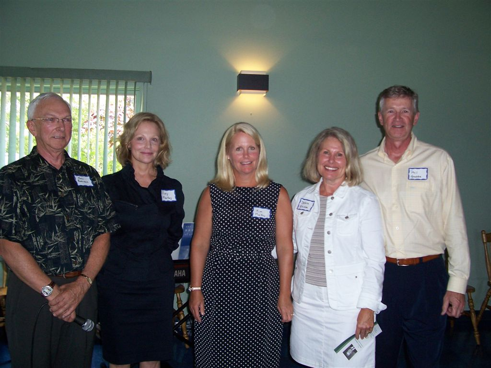

No. 50 August 19, 2006
David A. MacKay Fund Launched

The David A. Mackay Endowment Fund was officially launched in Summerside, PEI on August 5, 2006. On the left above is John Robinson, PEI and members of the Mackay family, Judy MacKay, Kim MacKay, Debbie Grubbe and Phil Grubbe.
Family and friends of the late David A. Mackay gathered in Summerside on August 5, 2006 to formally announce the establishment of the David A. MacKay Endowment Fund. The Fund was set up to honour the life of David A. MacKay, an Islander by birth who went on to a very successful business career in Canada and the USA. His greatest passion was building MacKay and Hughes of Toronto into the largest fresh potato distributor in North America.
The David A. MacKay Endowment Fund is one of a number of funds within the Community Foundation of Prince Edward Island, a non-profit organization administered by a volunteer board of directors, which oversees permanent endowments set up by members of the community. The Foundation is a registered charity and all donations are tax deductible in Canada and the USA
Income from the Fund will be used to make grants, for improving public awareness, for training, and for equipment directed towards improving the response to cardiac emergencies.
The
idea was born out of the fact that Mr. Mackay went into cardiac
stress on a golf course on PEI in 2002 and died shortly after at the
O'Leary Hospital. The intent of the MacKay Fund is to provide
grants to improve the response to such emergencies.
In
his remarks, John Robinson, President of the Community Foundation
and both a personal friend and business associate of Mr. Mackay,
thanked the family for this unique contribution to the health care
field in PEI. “Community foundations,” said Mr. Robinson, “are
concerned about all aspects of the quality of life on Prince Edward
Islanders and specialize in designing responses that reflect the
donor interests.
CFPEI currently administers 25 endowment funds reflecting a wide range of both community and donor interests. For information, or to make a contribution, contact the CFPEI at 892-3440.
_______________________________________
The Community Foundation News is an informal newsletter edited and published electronically by, and at the whim of, Don Glendenning. Think of it as a letter from a friend. Please let me know if you want your name added to or removed from the mailing list. Feel free to send this Newsletter to a friend. My Email address is dglende@auracom.com The Foundation email address is foundation@cfpei.ca. The Newsletters are posted on the Foundation Website www.cfpei.ca.